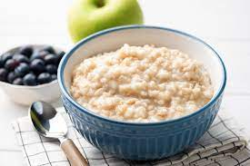

Gatsch is part of the wonderful daily eating event called Breakfast. For me this is by far the most exiting time to eat during the day, this is way i take my time when preparing for it.
The ingredients to success
Gatsch needs love, devotion and tons of banana. So get your fruit on and gooo! you can add any fruit or sweets to it, it is always amazing.